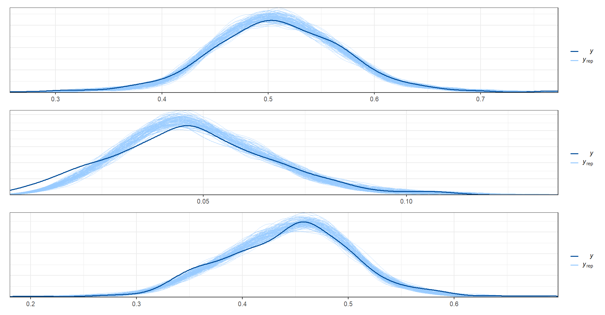

3.8 Identificando los argumentos para STAN
Creando \(\tilde{y}\), \(\tilde{n}\) y \(\hat{y}\)
D <- nrow(indicador_dam1)
P <- 3 # Ocupado, desocupado, inactivo.
Y_tilde <- matrix(NA, D, P)
n_tilde <- matrix(NA, D, P)
Y_hat <- matrix(NA, D, P)Realizando los calculos necesarios para cada categoria.
# n efectivos ocupado
n_tilde[,1] <- (indicador_dam1$Ocupado*(1 - indicador_dam1$Ocupado))/indicador_dam1$Ocupado_var
Y_tilde[,1] <- n_tilde[,1]* indicador_dam1$Ocupado
# n efectivos desocupado
n_tilde[,2] <- (indicador_dam1$Desocupado*(1 - indicador_dam1$Desocupado))/indicador_dam1$Desocupado_var
Y_tilde[,2] <- n_tilde[,2]* indicador_dam1$Desocupado
# n efectivos Inactivo
n_tilde[,3] <- (indicador_dam1$Inactivo*(1 - indicador_dam1$Inactivo))/indicador_dam1$Inactivo_var
Y_tilde[,3] <- n_tilde[,3]* indicador_dam1$InactivoCalculando \(\hat{y}\)
ni_hat = rowSums(Y_tilde)
Y_hat[,1] <- ni_hat* indicador_dam1$Ocupado
Y_hat[,2] <- ni_hat* indicador_dam1$Desocupado
Y_hat[,3] <- ni_hat* indicador_dam1$InactivoPara realizar la validación de los calculos construimos el siguiente gráfico.
hat_p <- Y_hat/rowSums(Y_hat)
par(mfrow = c(1,3))
plot(hat_p[,1],indicador_dam1$Ocupado, main = "Ocupado",
xlab = "hat_p", ylab = "Estimacion directa")## Error : The fig.showtext code chunk option must be TRUEplot(hat_p[,2],indicador_dam1$Desocupado,
main = "Desocupado",
xlab = "hat_p", ylab = "Estimacion directa")## Error : The fig.showtext code chunk option must be TRUEplot(hat_p[,3],indicador_dam1$Inactivo,main = "Inactivo",
xlab = "hat_p", ylab = "Estimacion directa")## Error : The fig.showtext code chunk option must be TRUE
ahora, la correlación de las covariables y las estimaciones directas
rr <- cor(hat_p,X_obs) %>% data.frame()
row.names(rr)<- c("Ocupado", "Desocupado", "Inactivo")
tba(rr)| luces_nocturnas | cubrimiento_cultivo | cubrimiento_urbano | modificacion_humana | accesibilidad_hospitales | accesibilidad_hosp_caminado | |
|---|---|---|---|---|---|---|
| Ocupado | 0.4920 | -0.1208 | 0.4485 | 0.2944 | 0.1127 | 0.0923 |
| Desocupado | 0.1402 | -0.1097 | 0.1098 | 0.1228 | -0.0765 | -0.0944 |
| Inactivo | -0.5401 | 0.1550 | -0.4869 | -0.3347 | -0.0915 | -0.0655 |
Agregando el intercepto a la matriz de covariables
X1_obs <- cbind(matrix(1,nrow = D,ncol = 1),X_obs)
K = ncol(X1_obs)
D1 <- nrow(X_pred)
X1_pred <- cbind(matrix(1,nrow = D1,ncol = 1),X_pred)3.8.1 Preparando argumentos para STAN
El código siguiente crea un objeto de lista llamado sample_data que contiene los datos necesarios para estimar el modelo de área de respuesta multinomial. La lista incluye el número total de dominios (D), el número de categorías (P), la cantidad de covariables (K), las estimaciones directas de las categorías en cada dominio (hat_y), la matriz de covariables de los dominios observados (X_obs), la matriz de covariables de los dominios no observados (X_pred) y el número de dominios no observados (D1). Este objeto de lista será utilizado posteriormente en la estimación del modelo utilizando la función stan.
sample_data <- list(D = D,
P = P,
K = K,
hat_y = Y_hat,
X_obs = X1_obs,
X_pred = X1_pred,
D1 = D1)3.8.2 Ejecutando el modelo en STAN
Este código ejecuta el muestreo MCMC utilizando el modelo especificado en fit2, con un número de iteraciones de muestreo y calentamiento de 2000 cada uno, y utilizando los datos en sample_data. También especifica una semilla de 123 para reproducibilidad y ejecuta cuatro cadenas paralelas en cuatro núcleos. El resultado es una lista fit_mcmc2 que contiene los valores muestreados de los parámetros del modelo y otros diagnósticos del muestreo.
fit_mcmc2 <- stan(
file = "01 Modelo de area/0funciones/01 Multinomial_simple_pred.stan", # Stan program
data = sample_data, # named list of data
# chains = 4, # number of Markov chains
verbose = TRUE,
warmup = 2000, # number of warmup iterations per chain
iter = 4000, # total number of iterations per chain
cores = 4, # number of cores (could use one per chain)
# refresh = 0 # no progress shown
)Guardando el modelo
saveRDS(fit_mcmc2,
"01 Modelo de area/CHL/2017/Data/fit_multinomial_con_covariable.Rds")leer el modelo previamente ejecutado
fit_mcmc2 <- readRDS("01 Modelo de area/CHL/2017/Data/fit_multinomial_con_covariable.Rds")3.8.3 Valores estimados para beta
summary(fit_mcmc2, pars = "beta")$summary %>%
as.data.frame() %>% tba()| mean | se_mean | sd | 2.5% | 25% | 50% | 75% | 97.5% | n_eff | Rhat | |
|---|---|---|---|---|---|---|---|---|---|---|
| beta[1,1] | -3.2887 | 0.0026 | 0.1005 | -3.4856 | -3.3565 | -3.2888 | -3.2228 | -3.0899 | 1550.456 | 1.0022 |
| beta[1,2] | -0.0324 | 0.0018 | 0.0749 | -0.1792 | -0.0827 | -0.0328 | 0.0200 | 0.1124 | 1732.077 | 1.0018 |
| beta[1,3] | -0.1460 | 0.0011 | 0.0428 | -0.2292 | -0.1752 | -0.1468 | -0.1166 | -0.0624 | 1459.259 | 1.0027 |
| beta[1,4] | -0.1329 | 0.0014 | 0.0633 | -0.2567 | -0.1755 | -0.1335 | -0.0906 | -0.0073 | 1942.175 | 1.0018 |
| beta[1,5] | 0.1987 | 0.0020 | 0.0727 | 0.0557 | 0.1489 | 0.1985 | 0.2490 | 0.3385 | 1385.171 | 1.0032 |
| beta[1,6] | 12.2961 | 0.0346 | 1.3589 | 9.5827 | 11.4018 | 12.2943 | 13.1933 | 14.9532 | 1541.759 | 1.0021 |
| beta[2,1] | -0.4829 | 0.0016 | 0.0502 | -0.5807 | -0.5173 | -0.4840 | -0.4487 | -0.3828 | 1009.085 | 1.0027 |
| beta[2,2] | -0.2249 | 0.0010 | 0.0375 | -0.2991 | -0.2496 | -0.2247 | -0.2001 | -0.1492 | 1425.482 | 1.0021 |
| beta[2,3] | -0.0249 | 0.0006 | 0.0212 | -0.0665 | -0.0393 | -0.0246 | -0.0103 | 0.0165 | 1237.445 | 1.0026 |
| beta[2,4] | 0.0041 | 0.0008 | 0.0309 | -0.0570 | -0.0170 | 0.0042 | 0.0253 | 0.0642 | 1682.866 | 1.0047 |
| beta[2,5] | 0.1075 | 0.0011 | 0.0364 | 0.0372 | 0.0824 | 0.1074 | 0.1322 | 0.1789 | 1147.132 | 1.0009 |
| beta[2,6] | 4.8313 | 0.0212 | 0.6851 | 3.4469 | 4.3705 | 4.8426 | 5.3007 | 6.1660 | 1048.115 | 1.0027 |
3.8.4 Valores estimados para la matriz de correlación
summary(fit_mcmc2, pars = "Omega")$summary %>%
as.data.frame() %>% tba()| mean | se_mean | sd | 2.5% | 25% | 50% | 75% | 97.5% | n_eff | Rhat | |
|---|---|---|---|---|---|---|---|---|---|---|
| Omega[1,1] | 1.00 | NaN | 0.0000 | 1.0000 | 1.0000 | 1.0000 | 1.0000 | 1.0000 | NaN | NaN |
| Omega[1,2] | 0.17 | 0.0024 | 0.0723 | 0.0262 | 0.1222 | 0.1701 | 0.2194 | 0.3066 | 914.0926 | 1.0004 |
| Omega[2,1] | 0.17 | 0.0024 | 0.0723 | 0.0262 | 0.1222 | 0.1701 | 0.2194 | 0.3066 | 914.0926 | 1.0004 |
| Omega[2,2] | 1.00 | 0.0000 | 0.0000 | 1.0000 | 1.0000 | 1.0000 | 1.0000 | 1.0000 | 7803.8115 | 0.9995 |
3.8.5 Validación dela convergencia de las cadenas
valores cercanos a 1 indica que las cadenas hicieron convergencia.
a <- as.data.frame(summary(fit_mcmc2)$summary)$Rhat
mcmc_rhat_hist(a, bins = 30)3.8.6 Evaluación visual de las cadenas para beta
El código dado genera un gráfico de densidad (mcmc_dens_chains), un gráfico de áreas (mcmc_areas) y un gráfico de traza (mcmc_trace) para cada parámetro en la matriz “beta” en la salida del modelo de MCMC “fit_mcmc2”. Los gráficos de densidad y de áreas muestran la distribución posterior de cada parámetro en la matriz “beta” para cada cadena del modelo.
posterior_beta <- as.array(fit_mcmc2, pars = "beta")
(mcmc_dens_chains(posterior_beta) +
mcmc_areas(posterior_beta) ) /
mcmc_trace(posterior_beta)3.8.7 extrayendo las estimaciones para theta
theta_temp <- summary(fit_mcmc2, pars = "theta")$summary[, "mean"]
theta_temp_pred <- summary(fit_mcmc2, pars = "theta_pred")$summary[, "mean"]3.8.8 Organizando los resultados en una matriz.
La primera parte del código crea una matriz theta_fh” de dimensiones D x P, en la que se colocan los valores medios de theta_temp. Los argumentos nrow y ncol definen las filas y columnas de la matriz, mientras que byrow establece que los valores se colocan por columnas. Luego se utiliza la función rowSums() para sumar los valores por filas.
El segundo bloque de código es similar al primero, pero crea una matriz theta_fh_pred de dimensiones D1 x P, con los valores medios de theta_temp_pred. Luego se utiliza la función rowSums para sumar los valores por filas.
theta_fh <- matrix(theta_temp, nrow = D,ncol = P,byrow = TRUE)
theta_fh_pred <- matrix(theta_temp_pred, nrow = D1,ncol = P,byrow = TRUE)3.8.9 Preparando el gráfico comparativo entre la estimación dir y el modelo
par(mfrow = c(1,3))
plot(theta_fh[,1],indicador_dam1$Ocupado)
abline(a = 0,b = 1, col = "red")
plot(theta_fh[,2],indicador_dam1$Desocupado)
abline(a = 0,b = 1, col = "red")
plot(theta_fh[,3],indicador_dam1$Inactivo)
abline(a = 0,b = 1, col = "red")3.8.10 Preparando el ppc
En el siguiente código se utiliza para realizar una validación cruzada predictiva (PPC, por las siglas en inglés) en los datos de prueba. Primero, se extraen las muestras de la distribución posterior predictiva para las variables \(\theta\) (y_pred_B). Luego, se seleccionan aleatoriamente 500 filas de y_pred_B. A continuación, se separan las columnas de y_pred_B correspondientes a cada categoría de ocupación (Ocupado, Desocupado, Inactivo) y se crean los vectores y_pred1, y_pred2 y y_pred3, respectivamente. Finalmente, se utiliza la función ppc_dens_overlay() para graficar la densidad de las predicciones en cada categoría y compararlas con los datos observados correspondientes.
posterior_theta <- as.array(fit_mcmc2, pars = "theta")
dim(posterior_theta)
rowsrandom <- sample(dim(posterior_theta)[1], 50)
theta_1<- grep(pattern = "1]",x = dimnames(posterior_theta)$parameters,value = TRUE)
theta_2<- grep(pattern = "2]",x = dimnames(posterior_theta)$parameters,value = TRUE)
theta_3<- grep(pattern = "3]",x = dimnames(posterior_theta)$parameters,value = TRUE)
y_pred1 <- posterior_theta[rowsrandom, , theta_1 ]
y_pred2 <- posterior_theta[rowsrandom, , theta_2 ]
y_pred3 <- posterior_theta[rowsrandom, , theta_3 ]
ppc_dens_overlay(y = as.numeric(indicador_dam1$Ocupado), matrix(y_pred1, ncol = length(theta_1)))/
ppc_dens_overlay(y = as.numeric(indicador_dam1$Desocupado), matrix(y_pred2, ncol = length(theta_1)))/
ppc_dens_overlay(y = as.numeric(indicador_dam1$Inactivo), matrix(y_pred3, ncol = length(theta_1)))
knitr::opts_chunk$set(warning = FALSE,
message = FALSE,
cache = TRUE)
library(kableExtra)
tba <- function(dat, cap = NA){
kable(dat,
format = "html", digits = 4,
caption = cap) %>%
kable_styling(bootstrap_options = "striped", full_width = F)%>%
kable_classic(full_width = F, html_font = "Arial Narrow")
}